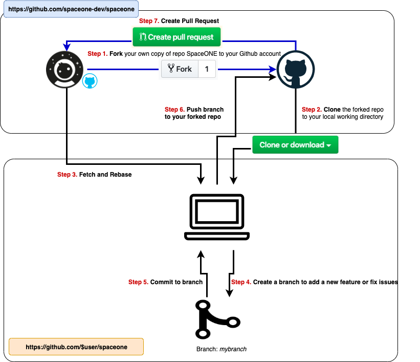

Development workflow

1. Fork in the cloud#
- Visit https://github.com/spaceone-dev
- There are lots of repositories. spaceone is top repository. Each micro service has own repository like identity, or inventory.
- Click 'Fork' button (top right) to establish a cloud-based fork.
2. Clone fork to local storage#
Create your clone:
git clone https://github.com/$user/spaceone.git
cd spaceone
3. Branch#
Add upstream:
git remote add upstream https://github.com/spaceone-dev/spaceone.git
# Never push to upstream master
git remote set-url --push upstream no_push
# Confirm that your remotes make sense:
git remote -v
Get your local master up to date:
git fetch upstream
git checkout master
git rebase upstream/master
Branch from it:
git checkout -b myfeature
5. Commit#
Commit your changes.
git add <changed files>
git commit -s
Likely you go back and edit/build/test some more then 'commit --amend' in a few cycles.
6. Push#
When ready to review (or just to establish an offsite backup of your work),
push your branch to your fork on github.com:
git push -f origin myfeature
7. Create a pull request#
- Visit your fork at
https://github.com/$user/spaceone - Click the
Crete pull requestbutton